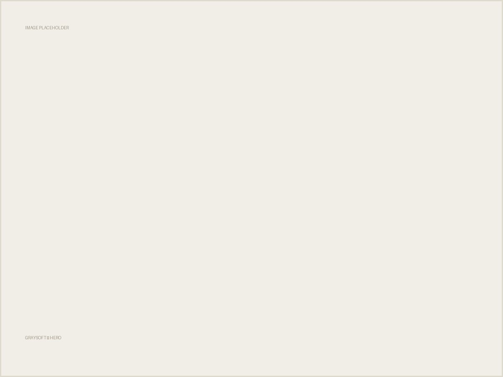
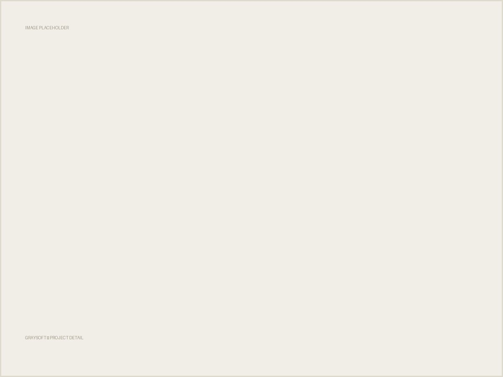
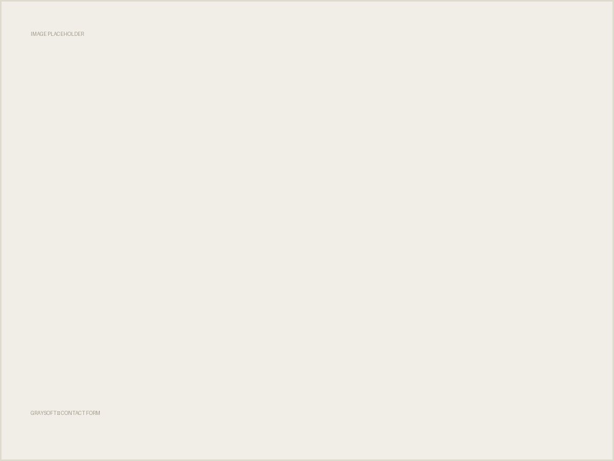

Agency Website Renewal
GraySoft
"신뢰감 있는 프리미엄 이미지"라는 추상적인 요구를, 프로젝트를 신뢰 증거로 쓰는 정보 구조로 구체화한 자사 홈페이지 리뉴얼입니다.
01
Overview
그레이소프트는 마유비의 외주 개발 브랜드입니다. 기존 홈페이지는 회사 소개와 서비스 설명 위주로 구성돼 있어, 실제 프로젝트 경험과 운영 역량이 잘 드러나지 않는 구조였습니다. 리서치부터 IA, UI 디자인, Framer 퍼블리싱, 문의 폼과 어드민 연동까지 개발자 개입 없이 단독으로 진행했습니다.
02
Background
"우리는 이만큼 잘합니다"를 말로만 하고 있었습니다. 기존 홈페이지는 다양한 정보를 담고 있었지만, 방문자가 그레이소프트의 강점을 빠르게 이해하기 어려운 구조였습니다.
기업 소개 중심 구조
회사 소개와 서비스 설명이 대부분을 차지해 실제 프로젝트 경험을 확인하기 어려웠습니다.
프로젝트가 신뢰 요소로 충분히 활용되지 못함
사례는 있었지만 목적·수행 과정·성과에 대한 정보가 제한적이었습니다.
차별화된 강점이 드러나지 않음
프로젝트 경험, 자체 서비스 운영 경험, 개발 프로세스 등 강점이 분산돼 있었습니다.
03
Problem
사용자는 개발사의 기술력을 직접 검증하기 어렵기 때문에, 간접적인 신호로 신뢰를 판단합니다. 경쟁사 분석 결과, 전문성 전달이 강한 곳일수록 프로젝트를 '결과물 전시'가 아니라 '신뢰 증명 수단'으로 활용하고 있었습니다.
똑똑한 개발자
전문성 전달 강함 · 프로젝트를 신뢰 증명 수단으로 활용 · 조직 역량 강조
리트머스
전문성 전달 강함 · 프로젝트를 성과 증명 수단으로 활용 · 성장 지표·프로세스 강조
그레이소프트 (As is)
전문성 전달 보통 · 결과물 소개 중심 · 정보가 분산돼 있음
04
Research
사용자가 보는 것은 프로젝트 자체가 아니라, 그 프로젝트를 통해 드러나는 운영 경험과 의사결정 과정이었습니다.
경쟁사들은 단순히 프로젝트를 나열하지 않았습니다. 진행한 프로젝트를 통해 전문성, 운영 경험, 신뢰도를 함께 증명하고 있었습니다.
05
Insight · Strategy
말이 아닌 증거로 구성하기로 방향을 잡았습니다. 개발 리소스를 최소화하기 위해 노코드 툴인 Framer로 반응형 웹을 직접 구현하는 것도 이때 결정했습니다.
실명 포트폴리오 그리드
서울대, KT, SK텔레콤 등 실제 클라이언트명을 썸네일 인터랙션으로 배치
자사 솔루션 실측 지표
베럽, 웨이브오더 등 상세페이지에 실제 운영 지표를 노출
협업 · 업무 방식 공개
프로젝트 진행 방식과 단계별 산출물을 확인할 수 있도록 구성
문의 장벽 제거
메일로만 받던 문의를 정해진 항목의 폼으로 신설, 어드민과 연동
06
Solution
신뢰를 증명하는 프로젝트 구조를 설계했습니다.
운영 중인 프로젝트를 직관적으로 구분
진행 상태 배지를 추가해, 결과물 소개를 넘어 실제 운영·유지보수 경험이 있는 프로젝트임을 전달했습니다.
호버 인터랙션으로 탐색 경험 강화
클릭 즉시 이동하는 방식도 검토했지만, 탐색 의도가 약한 방문자에게는 진입 장벽이 될 수 있다고 판단해 호버로 기대를 먼저 형성한 뒤 이동하도록 설계했습니다.
프로젝트 상세 페이지 제공
배경부터 주요 기능, 구축 범위, 서비스 화면, 운영 현황까지 확인할 수 있도록 구성하고, 협업 방식과 타임라인도 함께 제공했습니다.
핵심 운영 지표 시각화 + 스크롤 인터랙션
자체 플랫폼별 운영 지표를 함께 노출하고, 단순 나열 시 정보를 빠르게 지나칠 수 있다고 판단해 스크롤 행동에 맞춰 각 플랫폼에 자연스럽게 집중하도록 설계했습니다.
문의 폼 신설 + 어드민 연동
상담 가능 시간대·서비스 목적·예산을 자유 서술형 대신 버튼 선택형으로 구성해, 방문자가 망설임 없이 정보를 제공할 수 있도록 했습니다. (어드민 연동은 개발 협업)
07
Design
기획 → 디자인 → Framer 구현 → CMS → 어드민 설계까지 5단계를 혼자 진행했습니다. 정보 구조와 콘텐츠 설계, UI와 비주얼 시스템, 반응형 구현과 인터랙션, 새소식 관리 구조, 개발자 지원까지 전 과정을 담당했습니다.



08
Result
09
Reflection
"프리미엄하게"라는 말을 색이나 폰트가 아니라 정보 구조의 문제로 바꿔서 풀었던 프로젝트입니다. 경쟁사가 신뢰를 만드는 방식을 먼저 분석하고, 그 다음에 화면을 그렸습니다. 개발자 없이 기획부터 퍼블리싱까지 혼자 끝내면서, 디자인 결정이 실제로 구현 가능한지를 스스로 검증하는 감각을 얻었습니다.